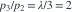

设  ，
， 。已知
。已知  ，则
，则  是？
是？
，。已知 ，则 是？- A

- B

- C

- D

我已思考，展开答案与解析
正确答案：B
- 泊松概率满足 。

，得 。- 。
易错提醒递推比的分母是下一项的下标，不是当前下标。
考后回忆 · 条件重建 · 回忆1；Ross第2.2.4节
依据考试回忆重建；数字、选项和必要条件为补充设定，非原题。
，。已知 ，则 是？
，得 。考后回忆 · 条件重建 · 回忆1；Ross第2.2.4节
依据考试回忆重建；数字、选项和必要条件为补充设定，非原题。